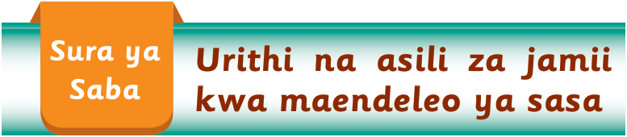
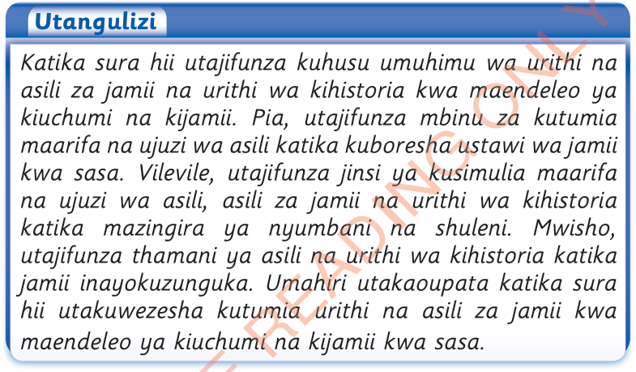

Katika sura hii utajifunza kuhusu umuhimu wa urithi na asili za jamii na urithi wa kihistoria kwa maendeleo ya kiuchumi na kijamii. Pia, utajifunza mbinu za kutumia maarifa na ujuzi wa asili katika kuboresha ustawi wa jamii kwa sasa. Vilevile, utajifunza jinsi ya kusimulia maarifa na ujuzi wa asili, asili za jamii na urithi wa kihistoria katika mazingira ya nyumbani na shuleni. Mwisho, utajifunza thamani ya asili na urithi wa kihistoria katika jamii inayokuzunguka. Umahiri utakaoupata katika sura hii utakuwezesha kutumia urithi na asili za jamii kwa maendeleo ya kiuchumi na kijamii kwa sasa.
Umuhimu wa maarifa na ujuzi wa asili na urithi wa kihistoria
Maarifa na ujuzi wa asili na urithi wa kihistoria una umuhimu katika maendeleo ya kijamii na kiuchumi kwa sasa.